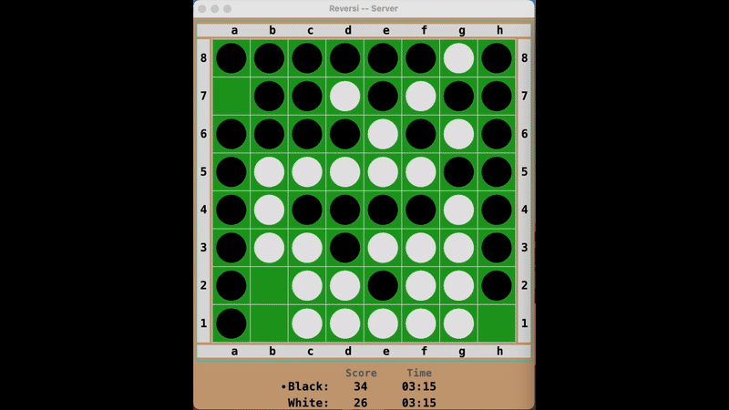
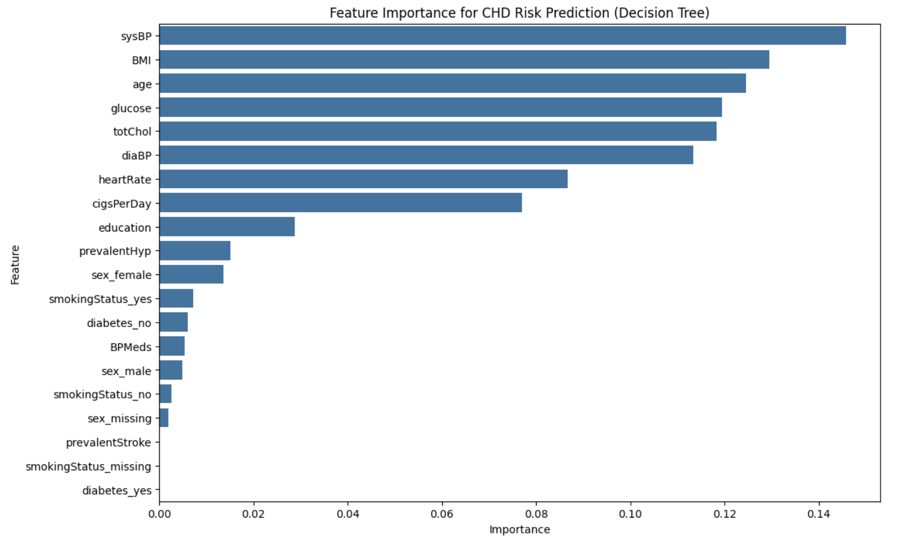
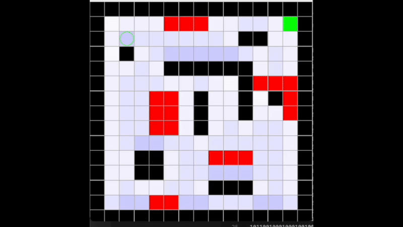
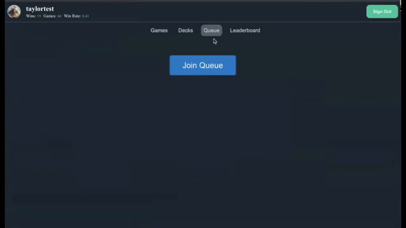

I am blah blah blah
I like to use this and that and this
This project was part of a tournament organized by my artificial intelligence professor. We were invited to create an AI that would play Reversi, a basic strategy game like checkers that involves randomn elements (the opponents moves) that an AI cannot certainly predict. I designed my AI agent mainly using Monte Carlo Tree Search to evaluate the best decisions while compensating for its opponents uncertain decision. I wanted to implement a machine learning element to its decision making that could 'predict' the opponent's best move (something like Google's AlphaGo) but ran out of time to implement this. I managed to qualify for the top cut of the tournament with this implementation.
This was a project I did for one of my university courses on machine learning. For this project, we were tasked with using the variety of machine learning techniques we learned to analyze a robust, messy dataset. Our group decided to analyze a dataset revolving around patients with and without heart disease. You can find the whole write-up here.
Another project I did during my artificial intelligence course, this project revolves around an agent that is trying to get to the end of a maze. Though the agent has an accurate layout of the enviornment, its sensors are not completely accurate in reading its surrounding. It also has a chance of 'misstepping' when it makes moves. To compensate for this, the agent uses a Bayesian filter I implemented to predict where it is based on its readings. The deeper the blue, the more likely the agent thinks it is in that location. The green circle represents its best guess as to where it is.
This project is part of an internship I did with Prowess, a start-up I connected with through one of my classes. During my time with Prowess, I was able to work on new back-end interactions with their products, namely designing a queueing / scoring system to investigate the effectiveness of matchmaking algorithms we were designing. Below you can find a demonstation of the front end queueing system and associated leaderboard that use these back-end interactions. I also did investigative design work on the algorithms associated with this system, though I am not at liberty to discuss their specifics.
